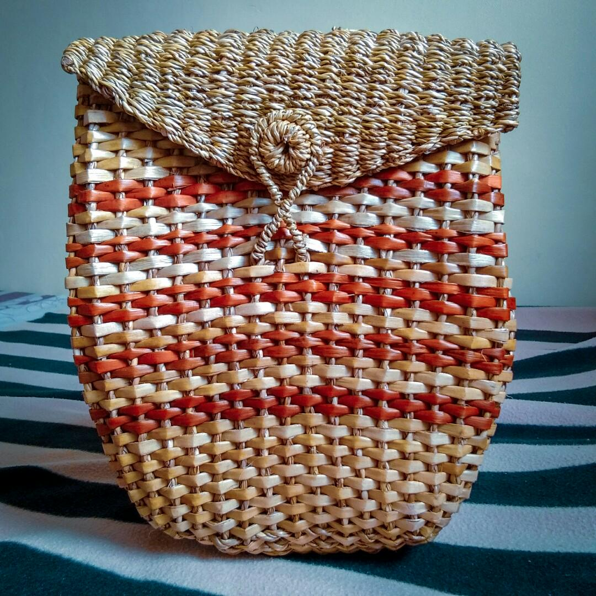
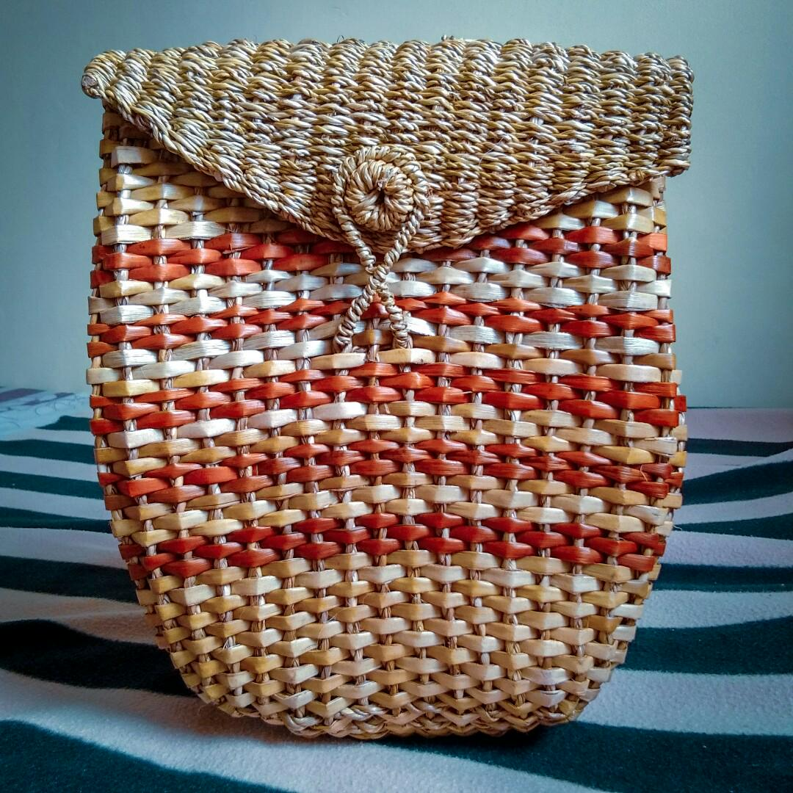

LilyAqua CreationsSince 1959. |
|
|
Since its establishment in the transformative year of 1959, Wonderlily emerged as a pioneering enterprise, spearheaded by the visionary founder, Godfather Renozalito Bison. Motivated by an unwavering commitment to ecological stewardship and innovative craftsmanship, our journey began with a bold vision to revolutionize traditional manufacturing practices. Embracing the challenge posed by the proliferation of the overpopulated and invasive water lily plant, we embarked on a groundbreaking endeavor to repurpose its abundant resources. With ingenuity and foresight, we harnessed the versatile fibers of this botanical nuisance, unlocking its untapped potential to weave a narrative of sustainability and creativity. Through meticulous artistry and dedication to quality, Wonderlily has transcended mere production, fostering a legacy of environmental responsibility and social impact. |
|
 
